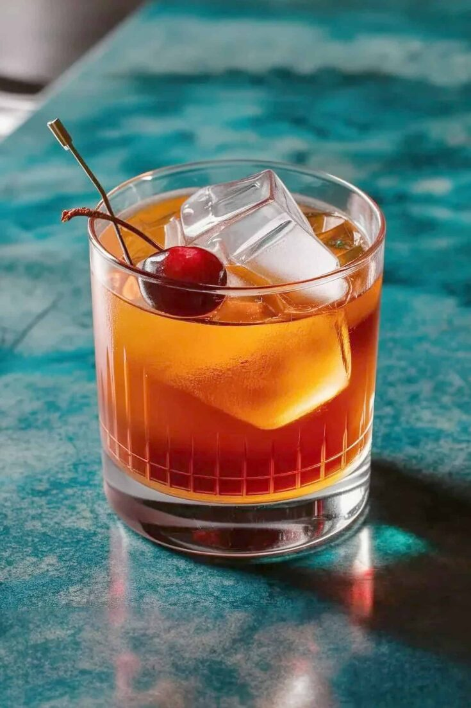

Old Fashioned Recipe

A classic old fashioned. What else is there to say? Adds a bit of class to any meal or activity. For this you'll
need:
- Simple syrup
- Water
- Bitters
- Ice
- Bourbon
- An orange slice
- Optional: Cherry
- Pour 2 teaspoons of simple syrup, 2 dashes of bitters, 1 teaspoon of water, and 2oz of bourbon into glass.
- Stir
- Add ice
- Add orange slice
- Optional: Add a cherry